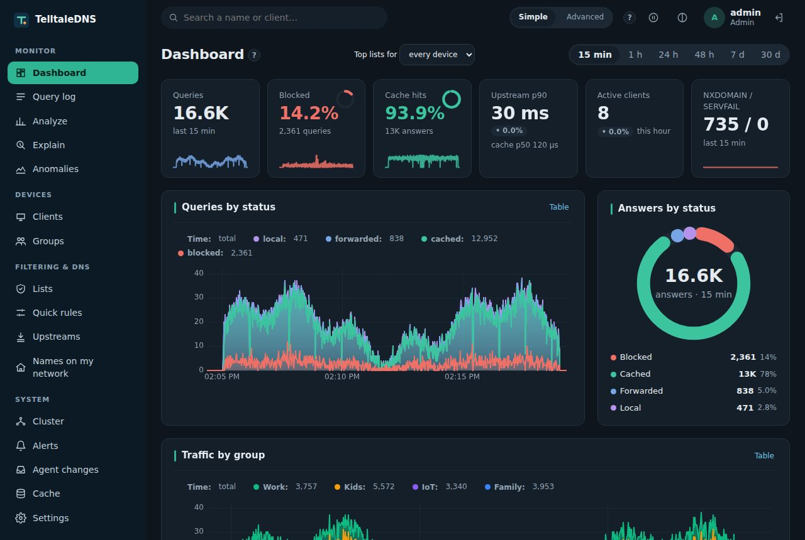
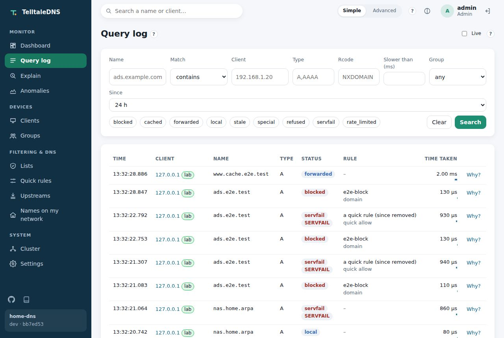
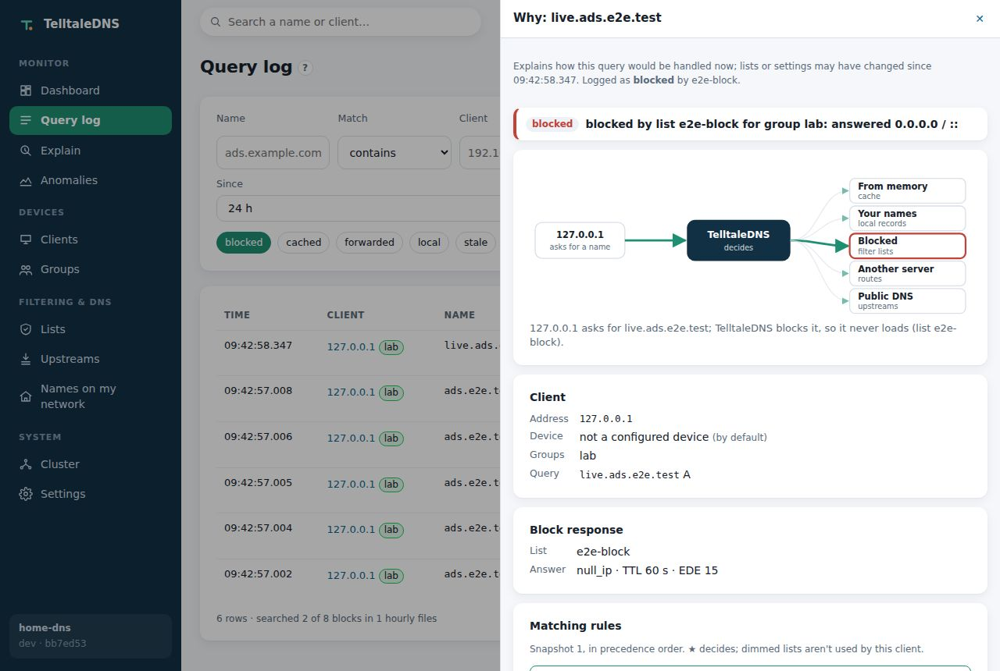
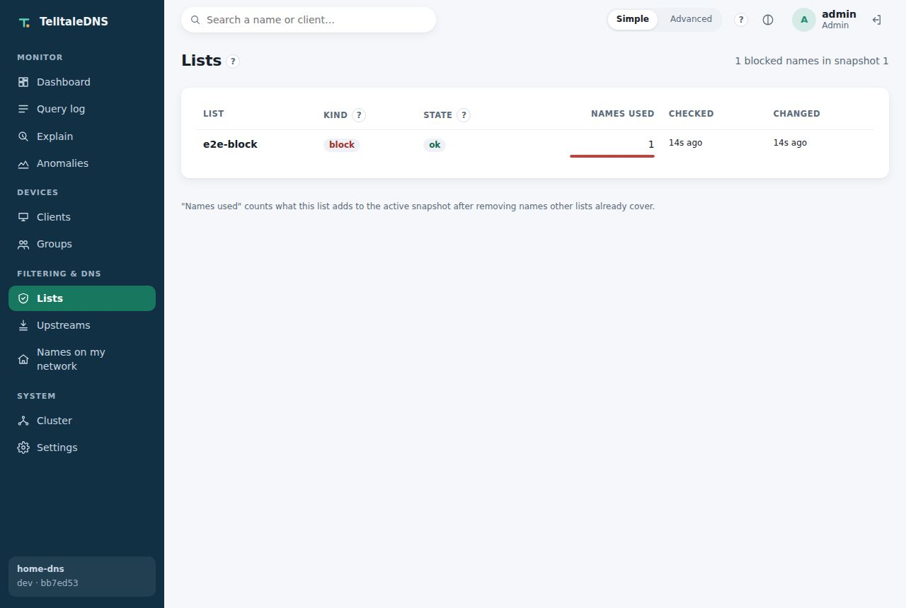
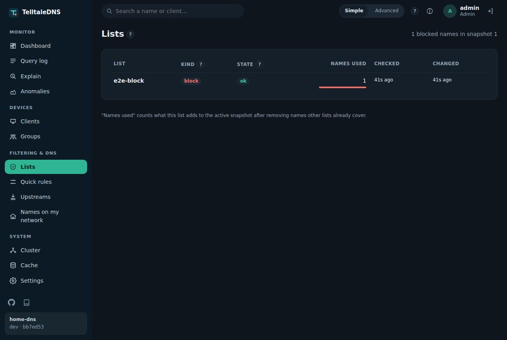
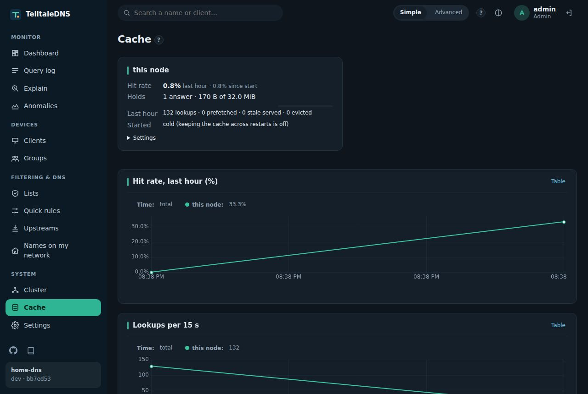
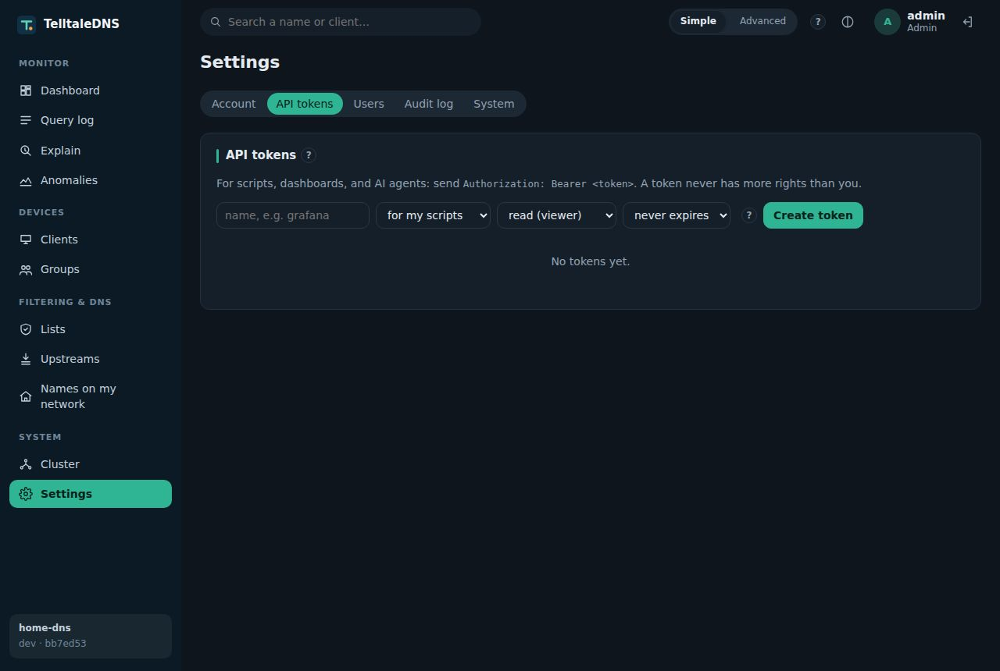

The web UI
Tour
The UI is built into the binary: nothing else to install. Light or dark, on a desktop or a phone.
These are captured by the Playwright suite against a real server (SHOTS=1 npx playwright test), so they always match the code. The test server is minutes old, so its charts are short.
See what's happening




Decide what's allowed


Run it as one system


